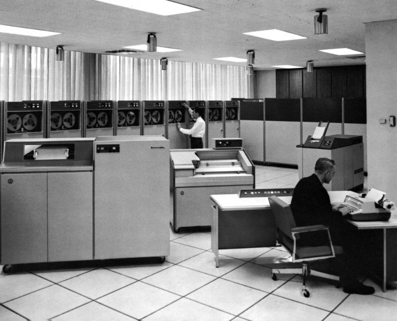

Burroughs B5500 Emulator
Open-Source Project
Project Blog
Getting Started Wiki
Resources

Start & Power On
Start – Powered Off
ID
Delay
Context
#Args
(Note: Closing or minimizing this window may cause the emulator to run very slowly)